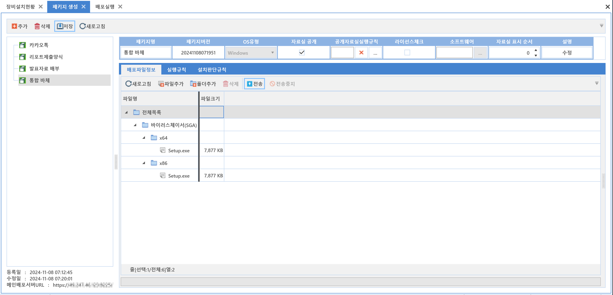
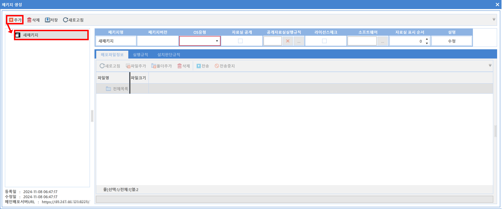
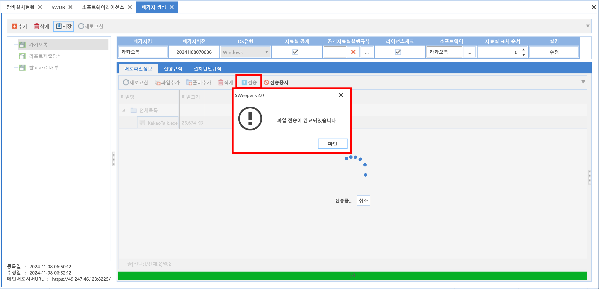
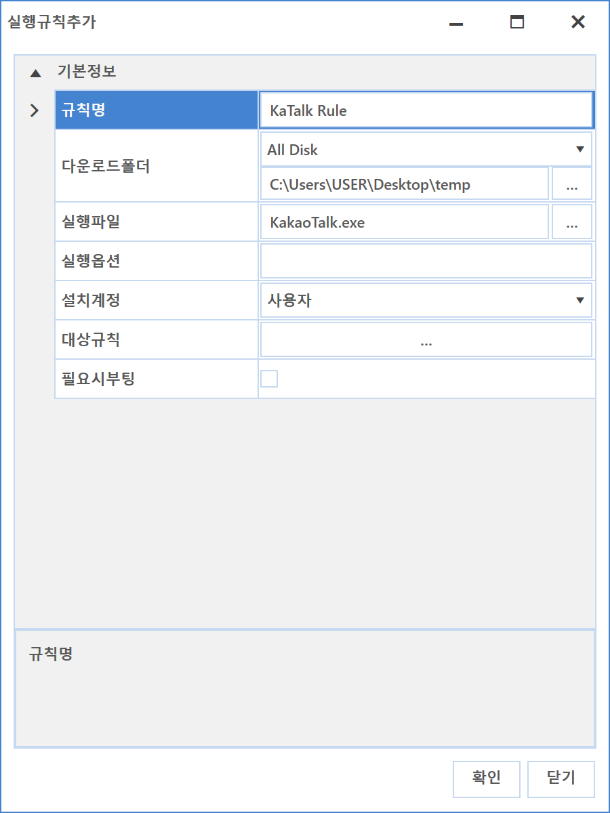
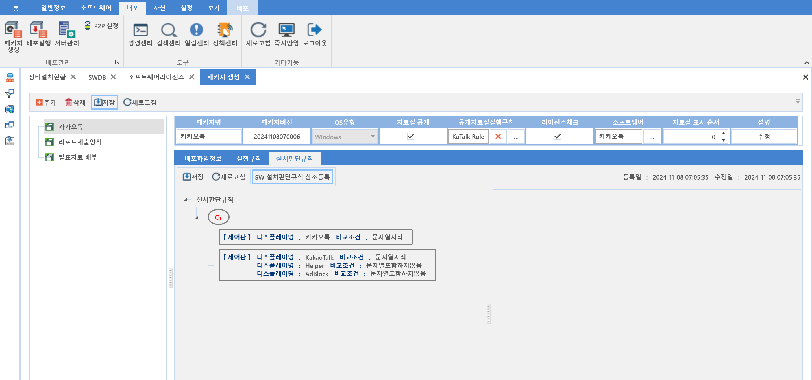
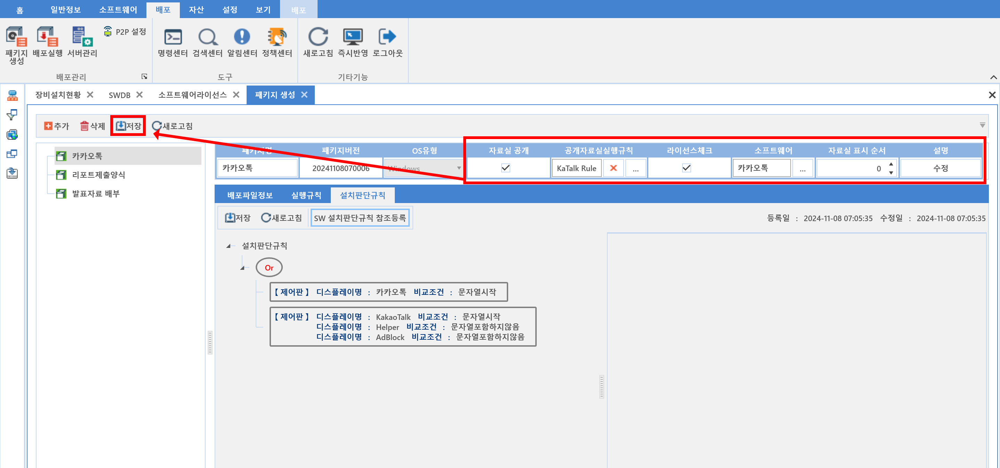

6-1-1. 패키지생성
6-1-1. 패키지생성
Source: https://www.sweeper.or.kr/etc/manual/611.html
6-1-1. 패키지생성


배포에 사용할 패키지를 생성하고 관리하는 화면입니다.
패키지 생성시에는 어떤 파일을 어떤 위치에 내려받도록 할 것인지 지정하고, 내려받은 경우 어떤 파일이 실행되도록 하는 등의 설정을 통해 패키지를 구성합니다.
이렇게 생성한 패키지는 이후 6-1-2. 배포실행 에서 배포 마법사를 통해 배포할 수 있습니다.


설정방법
- 추가 버튼을 클릭합니다.
-
새 패키지가 추가됩니다.
 -
우측에 있는 패키지 정보를 설정합니다. (이름과 OS유형만 입력 후 저장합니다)
- 패키지명 : 패키지명을 입력합니다.
- 패키지버전 : SWeeper에서 인식하는 버전으로 설정을 완료하면 자동으로 표시됩니다.
- OS유형 : Windows 와 Mac 중 선택합니다.
-
자료실 공개 : 사용자 PC 에이전트 UI에서 해당 SW를 노출할지 여부를 선택합니다.
-
자료실 공개하는 경우, OS 유형에 따라 해당하는 SW만 보여집니다.
-
ex) Mac으로 등록된 패키지는 Mac장비에서만 보여짐
-
공개자료실 실행규칙 : 사용자나 관리자가 내려보낸 SW가 어디에 다운로드되고 실행되는 등의 규칙을 선택합니다.
-
설정방법은 아래 배포 파일 실행규칙을 참고합니다.
-
라이선스 체크여부 : SWDB 라이선스 설정과 연동하여 인가된 사용자만이 배포되도록 할지 여부를 선택합니다.
-
소프트웨어 : SWDB 라이선스 연동할 소프트웨어를 선택합니다.
-
라이선스를 할당받은 장비는 에이전트 UI의 SW 신청화면에서 다운로드 받을 수 있게 됩니다.
-
우선순위 : ClientUI에서 보여주는 배포리스트 순서를 설정합니다.
-

-
설명 : 패키지 관련하여 설명할 내용을 입력합니다.
-
배포 파일(폴더)을 선택하고 업로드(전송) 합니다.
 -
새로고침 : 현재 업로드된 파일(폴더)상태를 재확인 합니다.
- 파일추가 : 파일을 추가할 수 있습니다.
- 폴더추가 : 폴더를 추가할 수 있습니다. (폴더 내 파일 포함됨.)
-
삭제 : 배포된 파일을 삭제합니다.
-
삭제 후 업로드(전송)을 해야 서버에서 삭제가 됩니다.
-
전송 : 서버로 파일을 업로드합니다.
-
실행규칙을 등록합니다.
-
실행규칙은 배포 후 실행되는 규칙을 등록 및 설정합니다.

-
추가버튼을 클릭합니다. 실행추가 화면이 팝업되며 설정을 합니다.
 -
규칙명 : 실행규칙 이름을 입력합니다.
-
다운로드 폴더 : 대상폴더를 선택 또는 입력 합니다.
-
디렉토리를 지정할 수 있습니다. (OS 유형에 따라 다르게 표시 됩니다.)

-
실행파일 : 배포 후 실행할 실행파일을 선택합니다.
-
실행옵션 : Silent 또는 Quiet 같은 실행옵션이 존재할 경우 입력합니다.
-
Mac 은 Silent 옵션을 지원하지 않습니다.
-
설치계정 : 실행할 수 있는 계정을 선택합니다.
-
설치 화면이 노출되어야 하는 경우 사용자를 선택해야 합니다.
-
(참고) Mac 은 pkg, dmg, mpkg 같은 확장자는 시스템계정으로 실행할 수 없습니다.
-
대상규칙 : 대상의 배포조건을 차단하는 규칙을 설정합니다.
-
소프트웨어의 [설치판단 규칙]과 설정이 동일합니다.
-
필요시부팅여부 : 배포 후 특정 실행으로 인한 재부팅이 필요한 경우 설정합니다.
-
설치판단 규칙을 등록합니다.
-
설치판단 규칙은 대상장비의 조건을 설정하여 배포될 있도록 하는 설정입니다.
-
소프트웨어의 [설치판단 규칙]과 설정방법이 동일합니다.
 -
[SW설치 판단 규칙 참조 등록] 버튼을 클릭 하여 SWDB에 입력되어있는 설치판단규칙으로도 설정이 가능합니다.

- 소프트웨어명을 검색한 뒤 해당 소프트웨어를 선택 합니다.

- SWDB와 동일한 규칙으로 패키지 설치 판단 규칙이 설정된 것을 확인 할 수 있습니다.
- 자료실 공개를 비롯한 기타 옵션을 체크하고 저장합니다.

참고사항
- 본 메뉴에서는 프린트 기능이 제공되지 않습니다.
- 자료실 공개 여부 및 라이선스 체크에 따른 사용자UI 화면은 11-3-1-4. SW 자료실에서 확인할 수 있습니다.
주의사항
하나의 패키지를 동시에 다수의 관리자가 전송할 경우 문제가 발생될 수 있기 때문에 이미 전송중인 데이터가 있는 경우 경고메시지가 팝업됩니다.
경고메시지를 확인했음에도 전송을 원할경우 강제전송을 할 수 있으나, 파일/폴더 구조 및 실제 파일에 문제가 생길 수 있습니다.
© Copyright SWeeper Inc.. All Rights Reserved